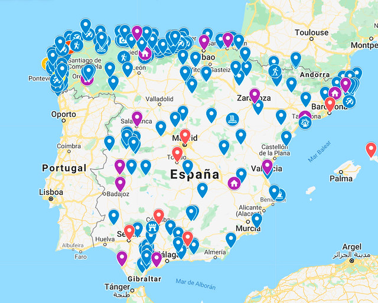

10 itinerarios y rutas por España en coche, ¡con planning!
Si buscas itinerarios y rutas por España en coche quédate por aquí porque he confeccionado 12 rutas para hacer
algunos de los mejores viajes que se pueden hacer por España 😀 Desde dos semanas recorriendo las joyas del
Cantábrico, a varias propuestas por Andalucía, recorridos por el Mediterráneo en 15 días, los pueblos más bonitos
de
España, rutas express por si tenéis pocos días, rutas gastronómicas para comer “rico, rico” e incluso rutas para
simplemente desconectar y practicar el bello arte de no hacer nada!
A lo largo de estos años he tenido la suerte de hacer muchos viajes por España recorriendo el país de cabo a
rabo.
Desde que me saqué el carnet de conducir a los 18 años se puede decir que no he dejado de hacer escapadas
¡Podríamos
decir que España es un país de 1000 viajes en uno! Así que os aseguro que ideas no me faltan

Pero ahora bien, ¿por dónde empezar? ¿cuales son las formas más guay de recorrer España? Pues paciencia joven
padawan, que para ello me he currado 10 súper itinerarios por España en coche que seguro que os van a gustar y que
os detallo al milímetro con:
PLANNING detallado día a día
TIEMPOS entre puntos calculados con Tomtom Go
TRAYECTOS entre puntos nunca superiores a 2h
ALOJAMIENTOS recomendados y qué noches hacer
RESTAURANTES guays donde hacer una paradita
MAPAS offline para llevar en el móvil
PDF para descargar gratis de todas las rutas
Creo que estaréis de acuerdo conmigo que si buscabais las mejores rutas en coche para viajar por España habéis
ido a parar al sitio adecuado, ¿cierto? 😉 Id ahorrando porque después de este artículo me vais a poner un piso en la
playa 😀 Lo dicho, pillad papel y boli que… ¡allá vamos!